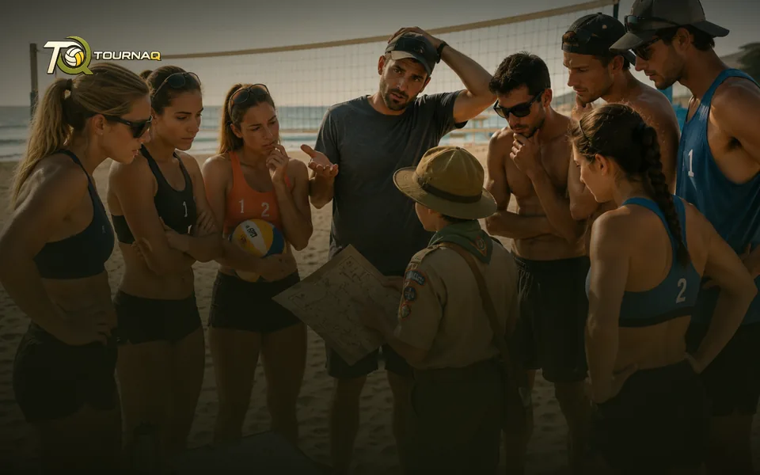
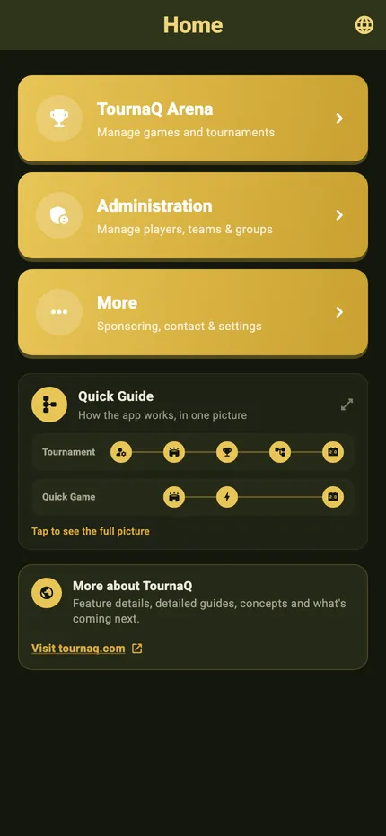

TournaQ User GuideEvery path through the app, from the
first tap to the finished scorecard.
first tap to the finished scorecard.
The map
TournaQ User Guide
The TournaQ User Guide takes you through every important function of the app. It starts with Administration — optional, set up before your games and tournaments so it is ready when you need it — but you can just as well go straight into the TournaQ Arena and do your administration while you build the tournament. Follow the flow below and tap any card to go deeper.
The way through
What each stop on the map does.
AdministrationPlayers, teams and groups, set up once — or added while you build the tournament.
TournaQ ArenaEvery game mode the app has. Pick one, and it takes you to that mode’s Tournament Hub.
Tournament HubCreate a new tournament, or copy one you have run before. All your tournaments are managed from here.
Running a TournamentAdjust what needs adjusting once it is live, and keep the overview over every match.
ScorecardsOne card per game format, so tracking a result is a tap rather than a translation — or write the final score in without opening a card at all.
Exported ScorecardHand a scorecard to another device by QR code — no internet involved.
MoreSponsoring & Promo, Contact & About, Settings and Become a Tester. Beside the flow rather than on it — the language, the appearance and the privacy options live in Settings.
Three ways to keep the results
Every route ends in the same ranking, and none of them needs a signal — pick whichever suits the event.
Score in the app — A card built for your game format, with timing, side changes and serving already in it
Manually Set Score — For a game played without live scoring — write the final score in set by set, no scorecard opened, and the ranking moves exactly as if you had tapped through every rally
Export and import — Take the game plan out, keep score however you like, bring the results back in for the ranking
Spread the load — Scorecards travel to other devices by QR code, entirely offline
The home screen
Light
Dark

The three destinations
Arena, Administration and More, and under them the Quick Guide — the app in one picture — and the link to tournaq.com. On the right the same home screen, in the dark palette.
The app comes in light and in dark
Every screen in this guide has both, and the switch is one tap in More › Settings. Navigation & Settings has the rest of the shell — where the settings live, and what the dark palette looks like across the app.
TournaQ Volley
The tournament engine — get the app